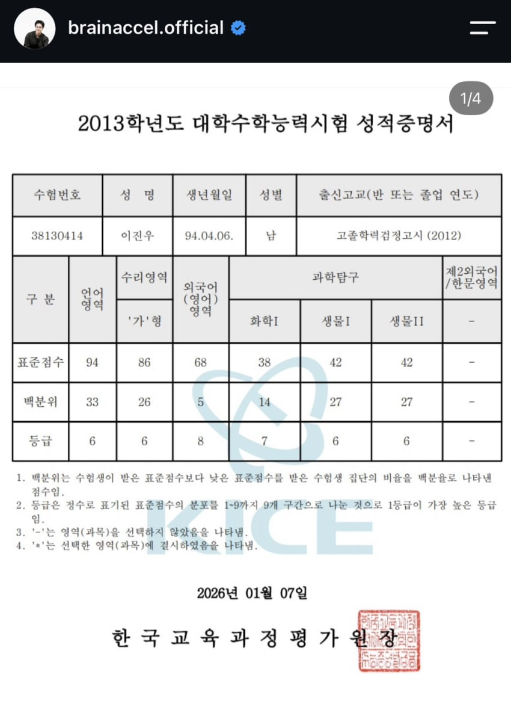
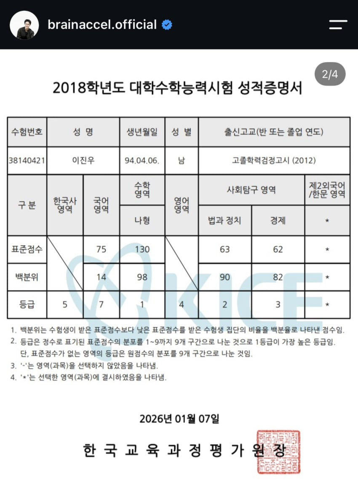
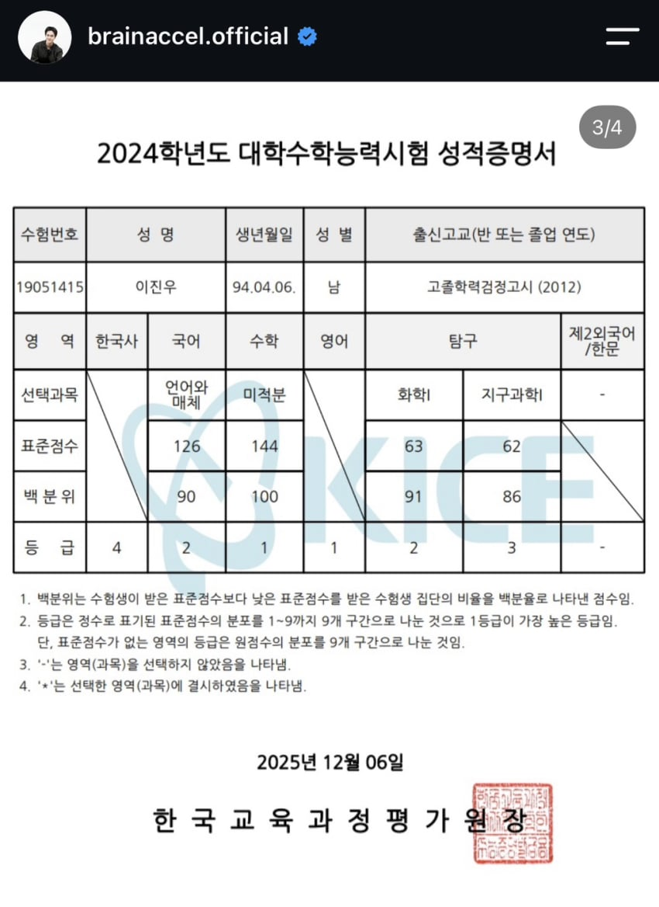
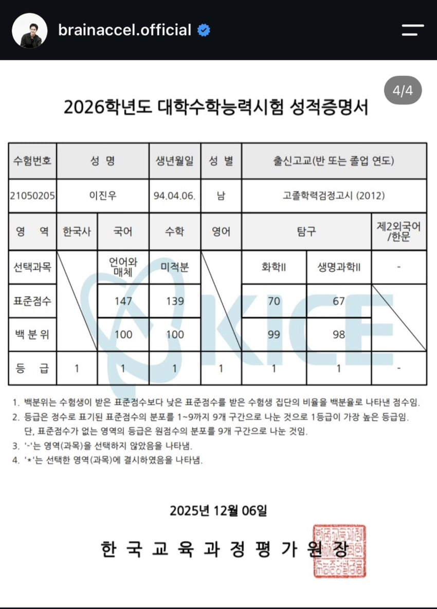
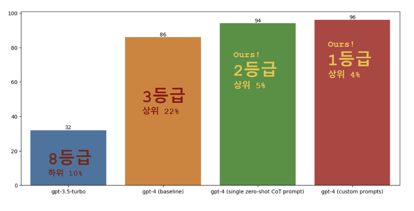

사실 2024학년도 수능 당시 2023년에도 GPT-4에 CoT 튜닝하면 국어 1~2등급은 가능했거든?(튜닝 안한 상태로는 3등급. 당시 무료 모델은 GPT-3.5)
https://www.youtube.com/watch?v=bJCw1V3DO5A
https://www.aitimes.com/news/articleView.html?idxno=152929
https://cafe.daum.net/subdued20club/ReHf/4524015
근데 그래도 수학은 당시 AI로 어떻게 했는지 도대체 모르겠다. 당시 콴다에서 수학 선택과목 3개 다 포함해서 테스트한 결과는 152점 만점에 52점이었는데 https://blog.mathpresso.com/gpt-4%EB%A1%9C-%EC%88%98%EB%8A%A5-%EC%88%98%ED%95%99-%EB%AC%B8%EC%A0%9C-%ED%92%80%EA%B8%B0-d99bdd16aab0
18학년도에도 나형 1등급 받은거 보면 수학은 진짜 실력이었던건지.(나형 1등급 컷이 보통 가형 4등급에 통합 3등급 정도고 이진우 18수능은 컷보다 높은 백분위 98이었으니까...) 브로커를 끼고 치팅하는건 AI 치팅보다 비용도 많이 들고 적발 위험도 높고...
방송사에서 책판매로 수십억 인세 냈다는 카더라를 보도하는거보면 제대로 검증되지 않았을 수도 있겠다 싶음